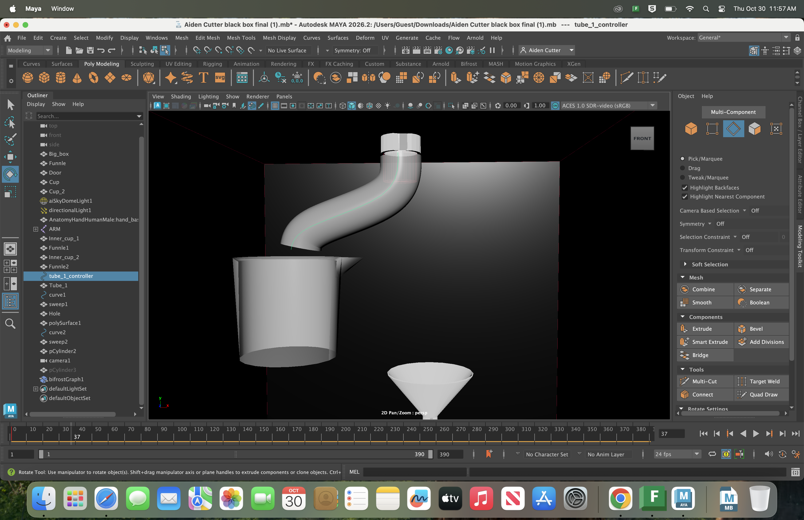
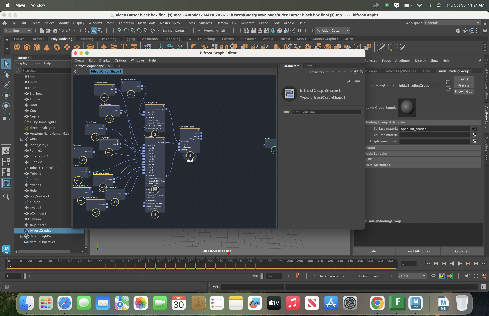
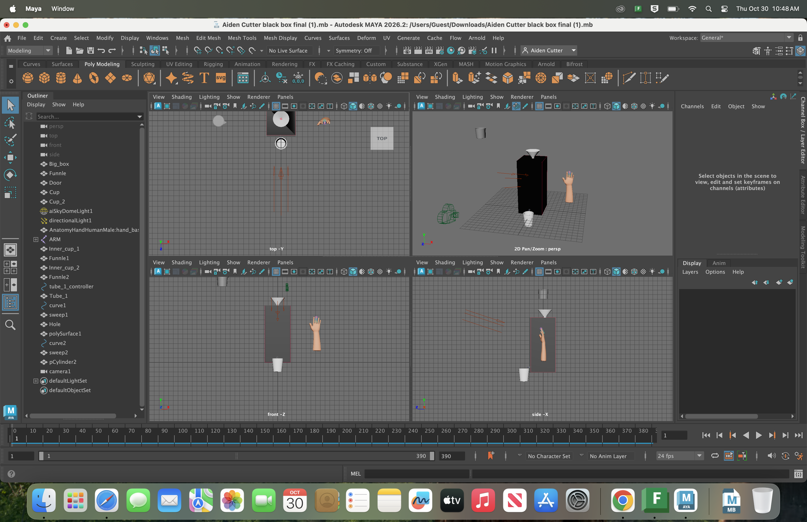
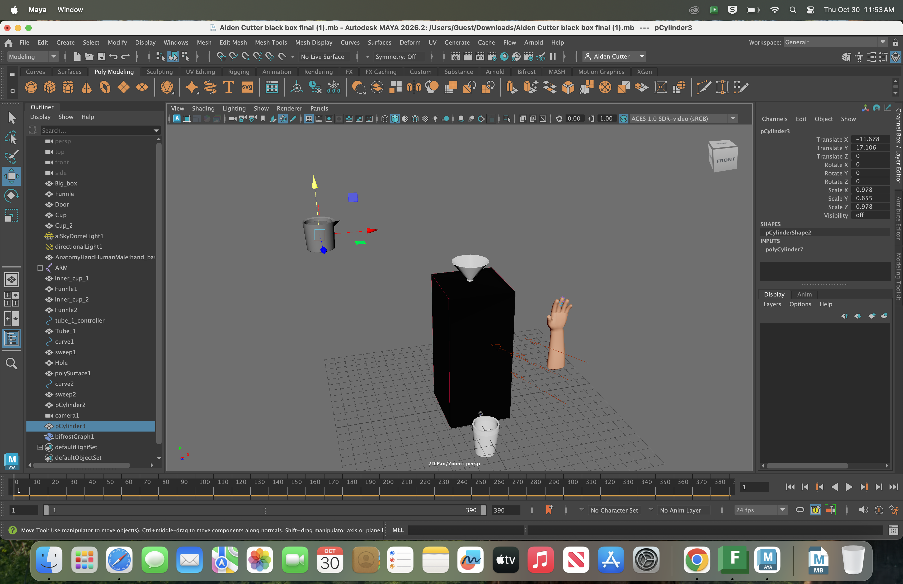
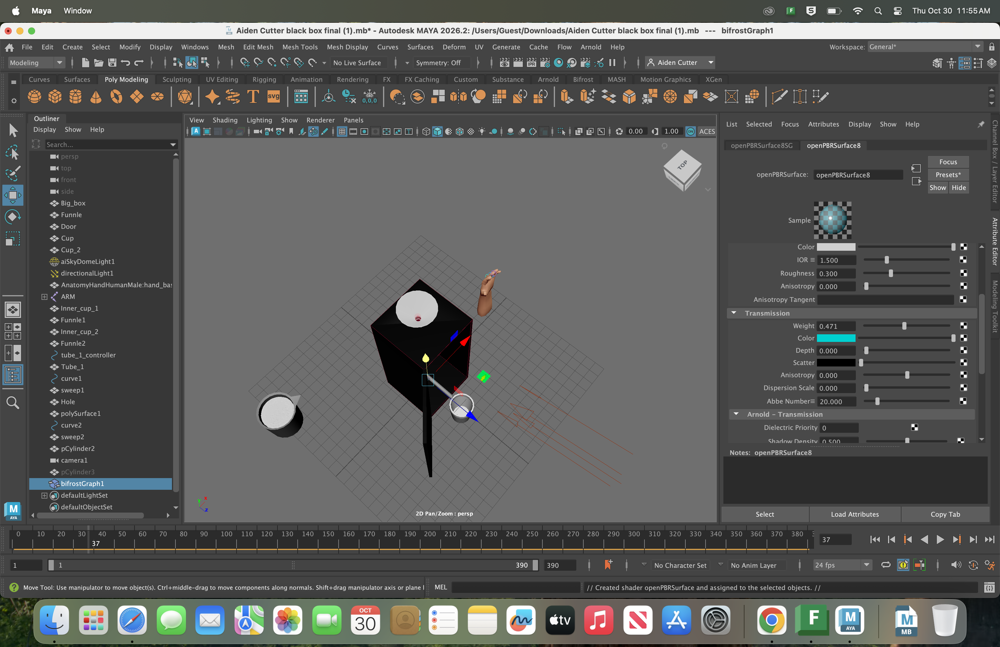
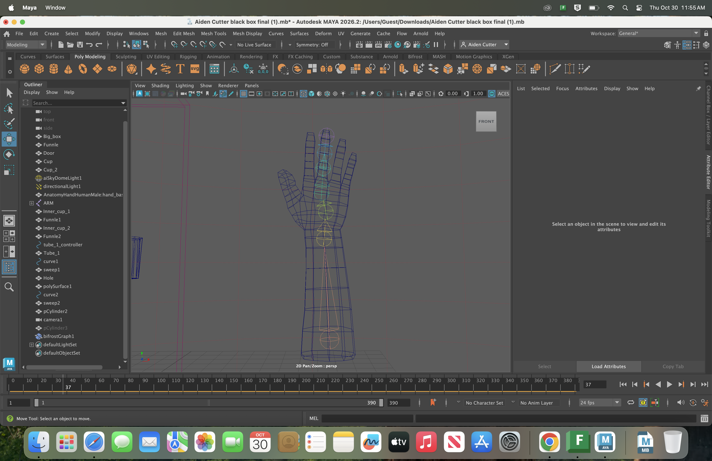
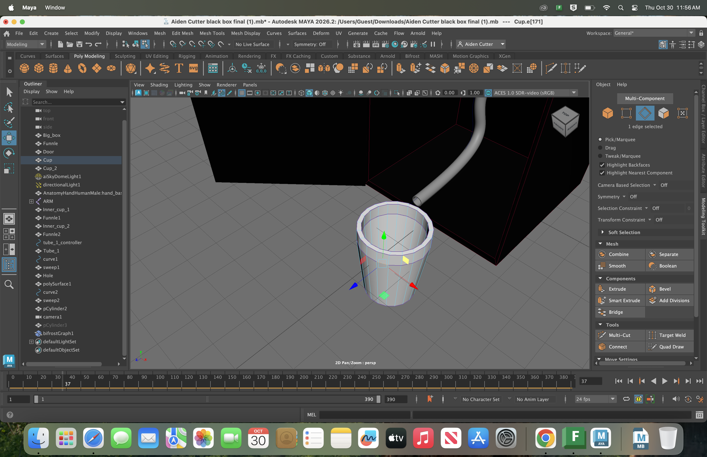
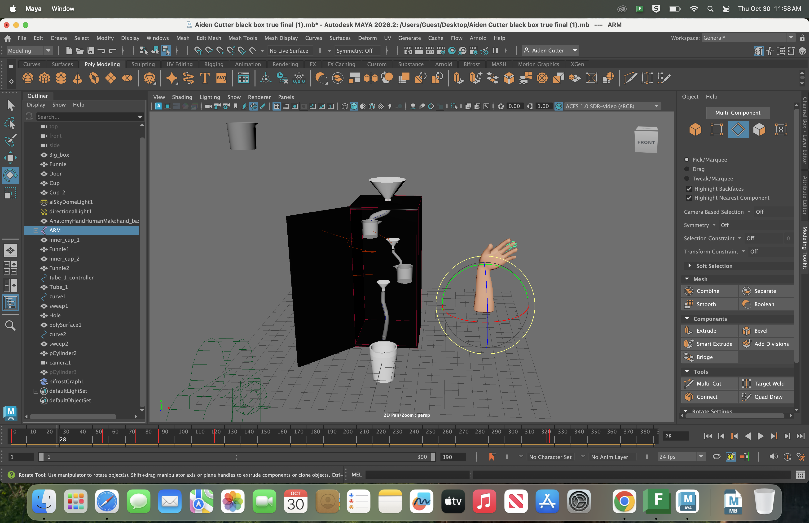

In our New Media and Tech Class at Engineering and Science University Magnet School we were challenged to create a middle of the mystery black box. Mr. Sinusses's Mystery Black Box is a 3 foot by 1.5 foot by 1.5 foot black plastic box with a white plastic funnel and clear rubber tube exiting the front of the box which was created by Mr. Sinussass. After research done by my group, I have concluded that there are no pouring cups in the box. Moreover, there is likely a different design that includes a tube that includes a tube that resembles the one in Leonardo Davinchi's greedy cup that has a tube that splits into two sections that eventually connect back into 2 sections that eventually connect back into the exit.
I think this because when we tested it by pouring the water from a graduated cylinder then collecting it when it pours out and measuring it in the graduated cylinder. Sometimes it excreted more water than we put in such as trial 11 when we put 100 ml of water into the top and 1940 ml came out of the exit. Sometimes less came out such as trial 2 when we put 1000ml of water in and nothing came out, or trial 4 when we put 1000ml in and 370ml out or the same came out for example in trial 7 we put 1000ml in and 1000ml came out. Also during trial 3, some spilt out of the bottom. We built my team's model by making the box out of cardboard and making two liquid containers fill up with water and once full, pour into a funnel. We used two chopsticks glued together to hold them up because just using one was too short, this led to it breaking. When testing my team's model, on the first and only working run before it broke, 1000ml went in and 323ml came out. It also made a different noise.
The model likely made a different noise because it had a different design. Also, the design my group created likely is prone to damage so would likely not last very long. Likely one of the only other ways would be to have a tube like in Davinchi's greedy chalice. Because of the break, it is unlikely that the components on the inside are just one piece, so it likely has another tube after the first one. In conclusion, there are no pouring cups in the box. Moreover, there is likely a different design that includes a tube that includes a tube that resembles the one in Leonardo Davinchi's greedy cup that has a tube that splits into two sections that eventually connect back into 2 sections that eventually connect back into the exit.

While taking photos, I used the rule of thirds to make two focal points during the part when someone was working on it. For example; the box would be on one of the lines while the person would be on the other line. I used the framing an angle to make things seem more important. For example, I took a picture of the black box from a low angle and the construction from a medium angle. During the initial brainstorming, I came up with two main ideas. The first one had a water wheel that had many of the tubes and would change out which one it used, and the one we used had two cups that poured. We chose the second one because we were told to choose the simplest model that would work, and it was unlikely for us to be able to create the first model. The Adobe Photoshop work with brushes and tablets was quite difficult when I first started using it, I originally found it difficult to line up something on the screen with what was on the table, but after practice and learning about more tools, it became easier. Another thing that took me a long time was the different brushes and brush sensitivity, for example; at first a lot of lines had discrepancies in thickness, but near the end, my skills had improved, but still had room for improvement. Creating a frame by frame animation was difficult because I find it hard to create very similar drawings, especially when not drawing directly onto the canvas. I had struggled with animation for the entire duration in which we were using it, which was for a short time, so with more time I could probably improve, but there really wasn’t much time to do very much of it.
Modeling the objects was interesting and rewarding when completed, but quickly became boring and repetitive. We did not do much with modeling, but my skills improved from basic shapes put together, to somewhat intricate designs. Channel/input changes, extrude, bevel, multicut, connect, curve/sweep mesh, and booleans enabled me to make more intricate shapes that allowed me to create a better design for my digital 3D model and pictionary openers. Adding materials and lighting was more difficult than I thought at first because we were introduced to coloring before being able to add lighting which made me go back towards the end of my project and redo a lot of textures. Learning about the different properties of textures and color matching was difficult because of the drastic changes in the properties like metalness and the color wheel being difficult. Rigging and animating was the easiest part of the project because it was the most straightforward part of the 3D project because animating the camera and other parts is just moving and keyframing. In the beginning, it was easy and simple, but I didn’t add enough movement and it looked dull and boring, so later I added more slight movements to the animations to make it seem more interesting and attention grabbing. The rigging was interesting because it required me to create a skeleton for the mesh hand which was fun to play around with, but I didn’t end up utilizing it to its full potential because I only made it wave in the beginning and end when I could have done so much more with it. I attempted to make a fluid simulation with a bifrost, but my animation moved too fast for it and I didn’t end up having enough time to redo all of my animations in that one day, so it probably could have worked out if I had more time to redo all of the animations, but unfortunately it did not.
The 21st competency that I most improved in was problem solving and critical thinking. I have shown this when in the early stages of the project, I made a model that didn’t necessarily work for the black box but was approved by my whole table. I improved near the middle when there was no support long enough to hold up the cups, so I came up with the idea to connect two chopsticks to connect together in a straw. This worked for a little bit but then broke some time later. During the end of the project, I developed another idea for the black box that is more plausible than my first ideas which I expressed in the CER.
| Trial | Input(ml) | Output(ml) |
|---|---|---|
| 5 | 1000 | 370 |
| 6 | 1000 | 1710 |
| 10 | 100 | 1940 |
| 11 | 1000 | 990 |
| 12 | 1000 | 942 |






